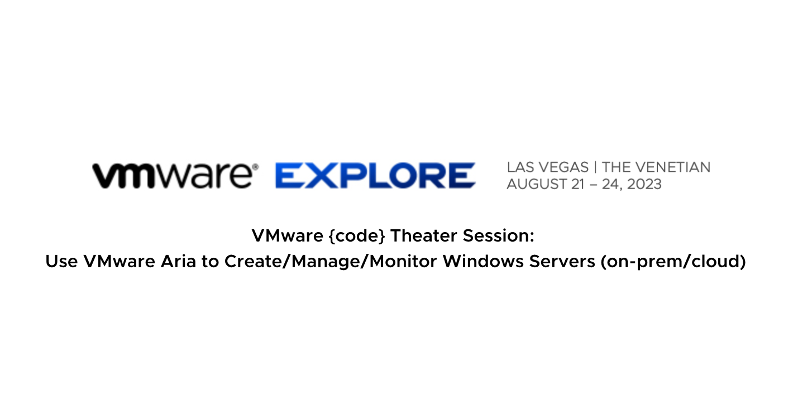
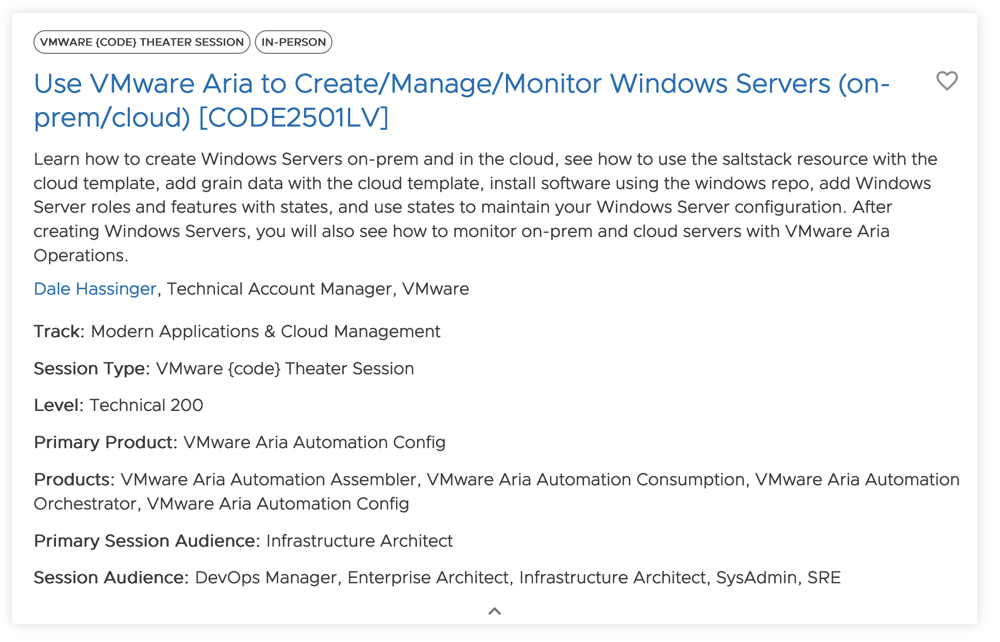
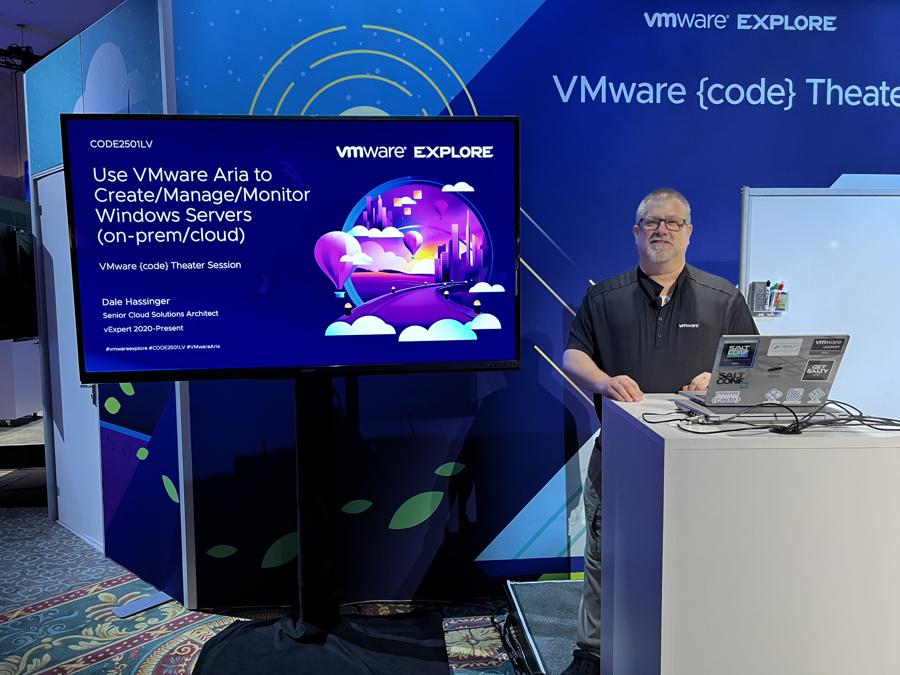
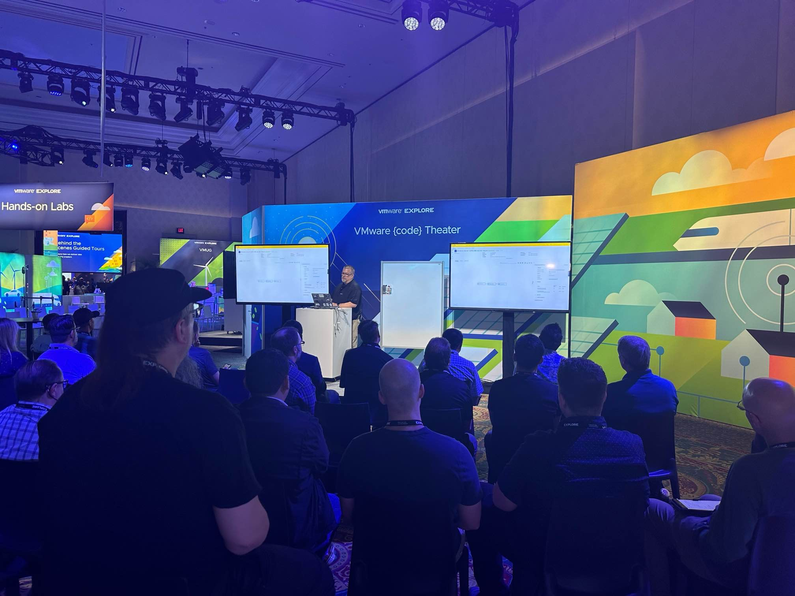

VMware Explore 2023 | Presentation

Use VMware Aria to Create/Manage/Monitor Windows Servers (on-prem/cloud)
I will be doing a VMware Explore 2023 Presentation. I did a virtual VMWorld presentation in 2021 but this will be my first VMware Explore Presentation that I will be doing "Live". There will be many days going into this presentation so that the people attending will feel it was worth their time to learn about the topic. This is an awesome topic that I am very passionate about.
So register today for VMware Explore 2023 and attend my session.
Session Name:
Use VMware Aria to Create/Manage/Monitor Windows Servers (on-prem/cloud) [CODE2501LV]
Description:
Learn how to create Windows Servers on-prem and in the cloud, see how to use the saltstack resource with the cloud template, add grain data with the cloud template, install software using the windows repo, add Windows Server roles and features with states, and use states to maintain your Windows Server configuration. After creating Windows Servers, you will also see how to monitor on-prem and cloud servers with VMware Aria Operations.

Presenters:
Dale Hassinger, Senior Cloud Solutions Architect, vExpert
Topic: Use VMware Aria to Create/Manage/Monitor Windows Servers (on-prem/cloud)
Session ID: CODE2501LV
Track : Multi-Cloud
Primary Products: VMware Aria Automation | VMware Aria Automation Config | VMware Aria Operations
Session Type: VMware {code} Theater Session
VMware Explore Conference: 08/21/2023-08/24/2023
Link to My Session:
My Session | Use VMware Aria to Create/Manage/Monitor Windows Servers (on-prem/cloud)
Link to VMware Explore 2023 Content Catalog:
VMware Explore 2023 | Content Catalog
Source Code:
All the code from my Presentation is in my GitHub Repository.
Here is the link:
PICs of the Presentation at VMware Explore 2023.


Video of the Presentation at VMware Explore 2023.

The presentation was well attended. There was some good discussions with some of the attendees after the presentation. Thank You to everyone that took the time from their schedule to attend my presentation.
- If you found this Blog article useful and it helped you, Buy me a coffee to start my day.